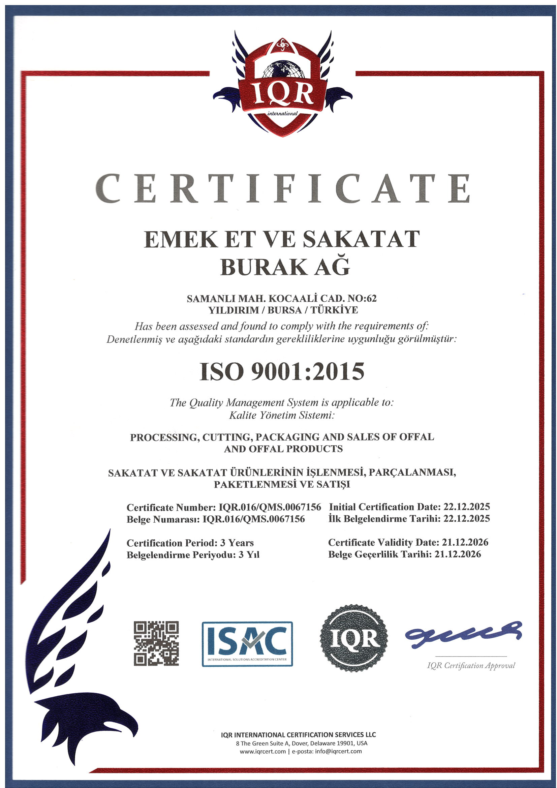
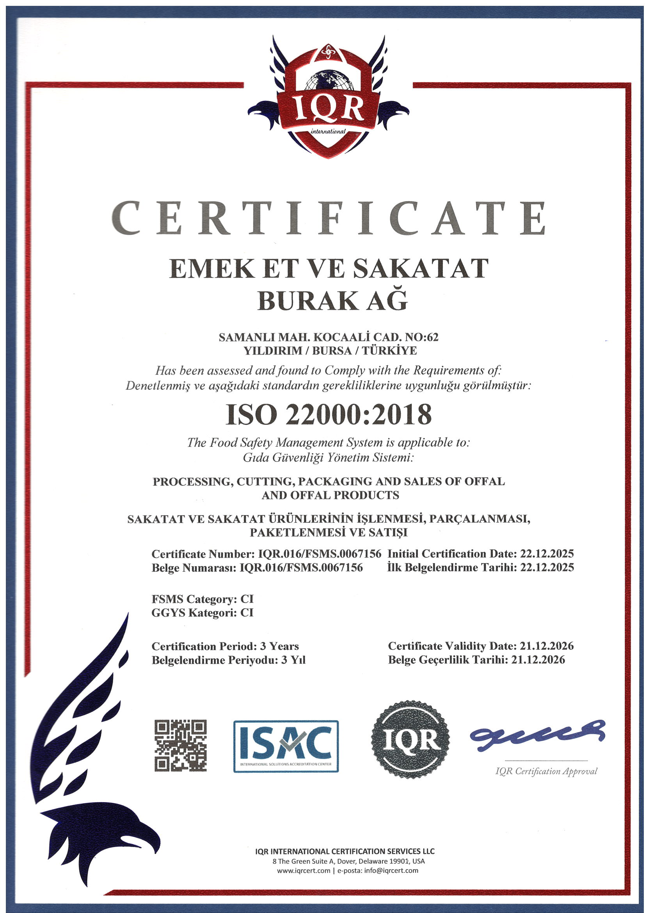
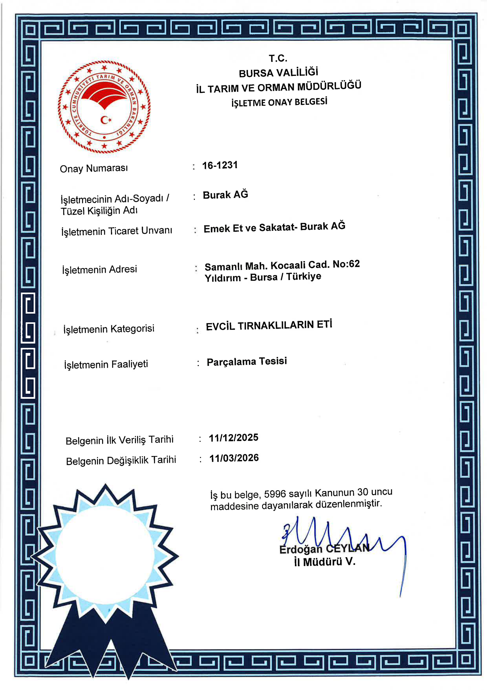
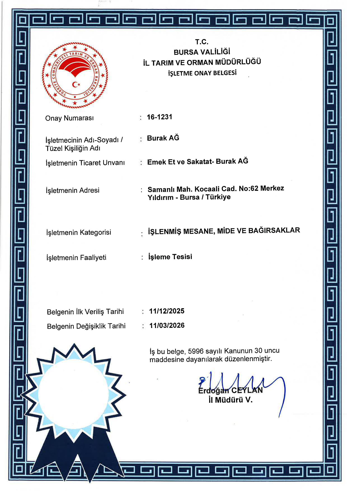

Bizi Tanıyın
1993'ten beri Bursa ve çevresinde hizmetteyiz. Çeyrek asrı aşkın tecrübemizle; sakatatçılıkta güvenin, tazeliğin ve hijyenin değişmeyen adresi olduk. Kuşaktan kuşağa aktardığımız ustalık bilgimizi, modern soğuk zincir altyapımızla birleştirdik. Özenle seçtiğimiz sakatat ürünlerini, uzman ekiplerimizle hijyenik koşullarda işleyerek her sabah taze ve sağlıklı şekilde tezgahlarımıza çıkarıyoruz.
Bursa ve çevresindeki restoran, lokanta, otel ve toptan alıcılarımıza kesintisiz hizmet sunuyoruz. Dükkanımız; temiz tezgahları, disiplinli ekibi ve her gün yenilenen ürün çeşitleriyle mahallemizin güvenilir sakatatçısı olmanın ötesinde, bölgenin tercih edilen sakatat tedarik noktasıdır. Sizler için çalışmak, güveninizi her gün yeniden kazanmak bizim için bir onurdur.
Misyon ve Vizyonumuz
Misyonumuz
Halkımıza sağlıklı, doğal ve lezzetli sakatat ürünleri sunmak; hijyen standartlarına eksiksiz uyarak soğuk zinciri kesintisiz korumak ve müşterilerimizin güvenini her gün yeniden kazanmaktır. Tazeliği ve kaliteyi, güvenilir üretimi ön planda tutarız.
Vizyonumuz
Kurulduğumuz günden bu yana taşıdığımız ustalık geleneğini modern tesis gücüyle birleştirerek; bölgemizin en güvenilir sakatatçısı olmayı sürdürmektir. Kalitesiyle bilinen, adıyla anılan ve gelecek kuşaklara aktarılan bir marka olmak en büyük hedefimizdir.
Kalite Standartlarımız
Kalite anlayışımızın temelinde tazelik, hijyen ve izlenebilirlik yer alır. Sakatat ürünlerimiz; veteriner kontrolünde seçilen taze sakatatlardan, soğuk zincir aşılmadan işlenir. Temin edilmesinden tezgaha ulaşana dek her aşama hijyen protokollerine uygun şekilde gerçekleştirilir. Günlük taze üretim, düzenli soğuk depo bakımı ve hijyen kontrolleri; sunduğumuz her ürünün ardında duran kalite standartlarımızın güvencesidir.



